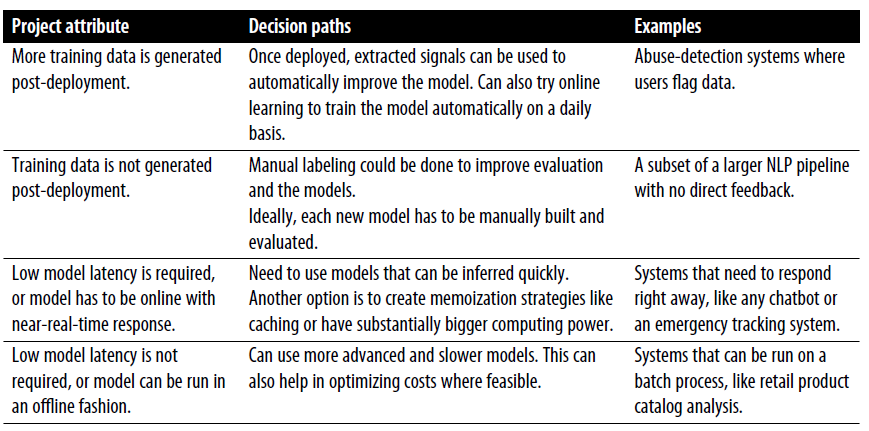

3.4 Deployment and Monitoring
Ship a module, watch it drift, and collect the next batch of data.
1. The model is a module
In a product, NLP is almost never the whole system. It sits behind a form, a queue, or another service. Deployment is plugging that module in: the same pre-processing as training, a defined input and output schema, and enough capacity to survive a busy hour.
If the notebook used lowercase → tokenize → TF–IDF → logistic regression, production must run that exact chain. A new tokenizer version is a silent model change.
Typical wrap: a function or HTTP endpoint that takes raw text and returns a label plus a score. The rest of the product decides what to do with that label (route the chat, hide the comment, show a warning).
Scalability is part of the design. A batch job overnight and a 50 ms API are different engineering problems. Pick the one the product needs; do not deploy a research notebook to a hot path.
2. What “done” means
You deploy when intrinsic metrics are good enough and the I/O contract is stable:
- input: encoding, max length, language
- output: label set, score, and what happens on low confidence (abstain, queue for a human)
- resources: memory, latency, dependency versions
A model that is 1 point better on F1 and 10× slower may be the wrong deploy. Note 3.2 already said production-ready is a modeling constraint.
3. Monitoring is not ordinary logging
A web service can be “up” while the NLP outputs are nonsense. You have to check that today’s predictions still make sense.

Watch at least:
| Signal | Why |
|---|---|
| Input mix | Language, length, source. A new app version can change the text. |
| Score / label rates | A sudden jump in “spam” may be an attack or a holiday campaign. |
| Agreement with humans | Sample a few dozen examples a week. Labels drift. |
| Latency and errors | Timeouts silently drop the hard cases. |
Data drift: the text distribution moved (new product names, a new slang). Concept drift: the meaning of a label moved (“vaccine” in 2019 vs 2021). Either one kills a model that still has a green health check.
The dashed arrow on the pipeline figure goes from monitoring back to data acquisition. New labeled examples are the fix. Retrain on a schedule or when a metric drops. Do not patch production with one-off if rules unless you also add a feature and a retrain (note 3.2).
4. Updating without surprising the product
Version the model and the vectorizer together. Keep the last good version so you can roll back. Tell downstream owners when the label set or the score scale changes.
A canary (send a slice of traffic to the new model) is the usual safe path. Compare intrinsic metrics on a fresh labeled slice and the extrinsic number the product already tracks.
5. Failure modes you will actually see
| What breaks | What it looks like | First fix |
|---|---|---|
| Train/serve skew | New tokenizer, different lowercasing | Pin versions; golden-test a few strings |
| Empty or huge input | Crash or timeout | Reject or truncate with a documented policy |
| Label ontology change | “care” split into “billing” and “tech” | New head; do not reuse old F1 |
| Feedback loop | The model’s own errors become tomorrow’s training data | Sample for humans; do not train only on production predictions |
A golden set of 50–100 examples with known labels, run on every deploy, catches skew faster than a dashboard. If three golden cases flip label after a “harmless” library bump, do not ship.
The pipeline figure’s last arrow is the point of this note: monitoring feeds acquisition. If you never label new traffic, the module is a snapshot of last semester’s language. Plan the labeling budget when you deploy, not after the first incident.
6. Practice
-
Name one metric you would plot daily for the sales-vs-care router that is not F1.
-
The service is healthy (200s, low latency) but care agents say everything is being sent to sales. What drifted, and what do you inspect first?
-
Why must the tokenizer in production be the same object (or the same code and version) you fitted on the training set?